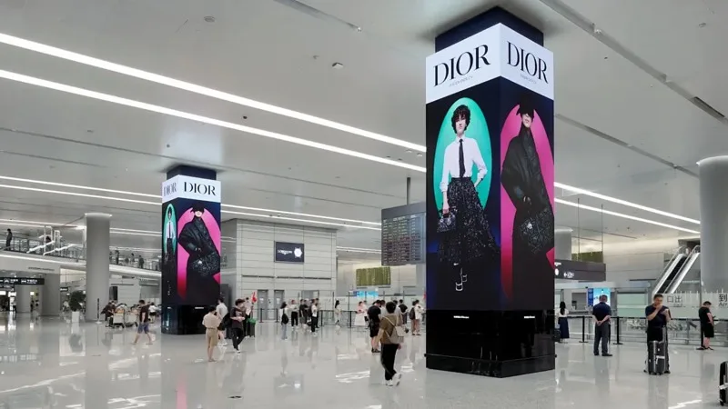
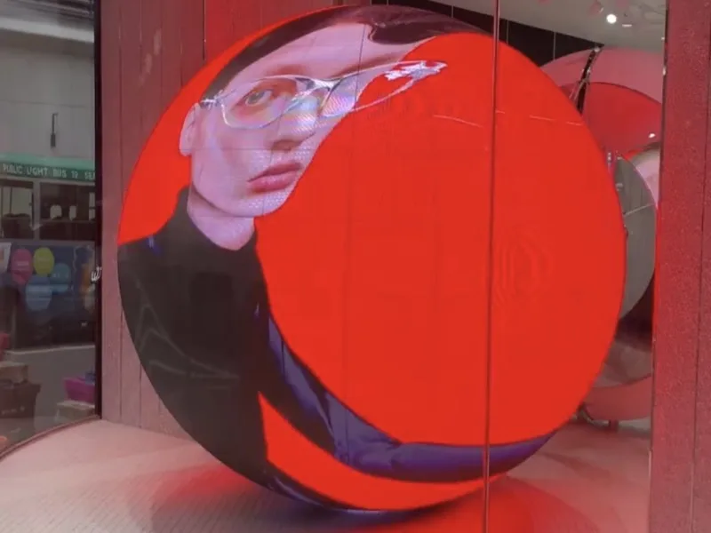

Does an indoor LED wall need a fire rating? It depends on where it is installed and how the local authority classifies it. In a hotel lobby, an airport concourse, a theatre foyer or an escape corridor, the fire engineer or the authority having jurisdiction (AHJ) may ask how the wall behaves in a fire: how quickly flame spreads across it, how much smoke it produces, and whether burning droplets fall. Tenders express that with three families of references — EN 13501-1 in Europe, ASTM E84 and NFPA codes in North America, and product-level material ratings such as UL 94. This guide explains what each one means for a video wall and what evidence to ask for.
It does not repeat the lobby or concourse selection guides. For those, see which LED display a hotel should choose for its lobby and LED displays for airport concourses and entry gates.
An LED wall is electrical equipment, and its product-safety evaluation (usually IEC 62368-1 or UL 62368-1) already includes fire-enclosure and material-flammability requirements inside the cabinet. See our IEC 62368-1 guide for how to check that report.
A large wall, though, also behaves like a wall covering. Some authorities treat a big video wall in a corridor or an assembly space as interior finish or decorative material, and apply the same reaction-to-fire rules as panels and cladding. Others accept the equipment evaluation alone. Rules differ by country, building type and even by inspector, so ask the fire engineer or AHJ early which approach applies, and record the answer in the tender. It decides whether you need a material classification report at all.
EN 13501-1 classifies the reaction to fire of construction products in Europe. A classification has three parts:
| Part | Classes | What it describes |
|---|---|---|
| Main class | A1, A2, B, C, D, E, F | Contribution to fire, from non-combustible (A1) to not determined (F) |
| Smoke | s1, s2, s3 | Smoke production, s1 lowest |
| Flaming droplets | d0, d1, d2 | Burning droplets or particles, d0 none |
A classification such as “B-s1,d0” is therefore a product that contributes very limited fire, produces little smoke and drops no burning particles. Building regulations in each country then decide which class is required in which location; escape routes and large public spaces are usually the strictest. The classification applies to the product as tested, including its mounting and substrate, so a report for a material on one backing does not automatically cover a different build-up.
In the United States, interior-finish rules in NFPA 101 (Life Safety Code) and the building codes rely mainly on the ASTM E84 tunnel test, also published as UL 723. It produces a flame spread index and a smoke-developed index:
| Class | Flame spread index | Smoke-developed index |
|---|---|---|
| Class A | 0–25 | 450 or less |
| Class B | 26–75 | 450 or less |
| Class C | 76–200 | 450 or less |
The occupancy and location decide which class is needed. Some materials are instead assessed by a room-corner test such as NFPA 286. Electrical installation, including cable types, falls under NFPA 70 (the National Electrical Code). For stage and event use, scenery, drapes and scrims around an LED wall are usually covered by flame-propagation tests such as NFPA 701, which is why touring productions travel with certificates for their soft goods.
Figure 1 shows LED columns in a busy concourse, the kind of public circulation space where fire engineers look most closely at finishes and smoke.

Most of the mass of a modern indoor cabinet is metal; die-cast aluminium does not contribute fuel in the way a plastic or timber panel does. The combustible content is in smaller parts, and those are the ones to ask about:
Asia Vision's indoor product pages publish the cabinet construction but not fire or smoke classifications. The M-PRO and R-PRO pages publish die-cast aluminium cabinets (16:9 and 640 × 480 mm respectively) with no backshell and SMD or GOB modules, and the COB CV-PRO page publishes a no-backshell COB design down to P0.9375. Material flammability ratings, cable types and any reaction-to-fire test evidence are confirmed on the quotation for the exact build; do not assume a classification from the cabinet material alone.
Two cautions. A report is only valid for the product and build-up tested; a supplier's report on a different module or mounting is not evidence for yours. And a percentage of “fire-retardant material” is not a classification. If a tender demands a Euroclass or an ASTM E84 class for the whole wall and no report exists, discuss it before the bid closes; testing takes time and has to be planned into the programme.
Figure 2 shows a spherical LED display in a museum, where custom shapes and decorative build-ups make the fit-out materials as important as the display itself.

Hotels and lobbies. The wall is often in the main escape route from lifts and ballrooms. Expect the fire engineer to review the wall, its backing and any decorative frame together.
Airports and transport hubs. Terminal tenders frequently include project-wide fire and smoke clauses for all fit-out items. Read the airport's technical specification for cable and material requirements; our airport tender guide covers the rest of the evaluation.
Theatres, stages and rental. Temporary LED walls on stage are usually treated as equipment, while venues check scenery, drapes and masking. Rental companies should keep the cabinet safety reports, cable specifications and soft-goods certificates in the show file, because venue fire officers ask for them at load-in.
A tender clause that suppliers can answer honestly names the reference, the location and the evidence: “For the LED wall in [location], the bidder shall state the reaction-to-fire evidence available (EN 13501-1 classification or ASTM E84 / NFPA 286 report, as applicable), the tested build-up, the flammability rating of plastic and PCB materials, and the cable type. Where no classification exists, the bidder shall state so.” Pair it with the building preparation scope in our dvLED wall preparation guide and the general structure in the tender specification guide.
Asia Vision product pages publish a 3-year warranty and 18-day standard delivery; fire and smoke evidence is confirmed per model on the quotation. Send the location, the authority's requirement and the build-up through our contact form.
Facing a fire or smoke clause in a tender? Send the location, the clause and the wall build-up, and we will tell you which evidence is available for the model and what needs planning. Start a project enquiry.